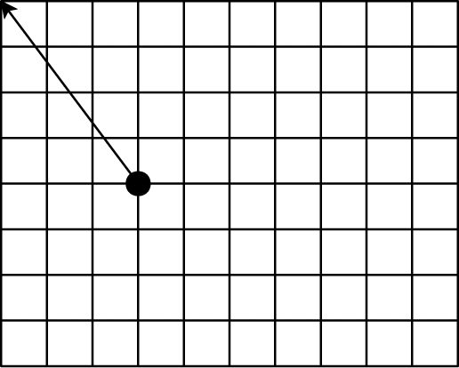
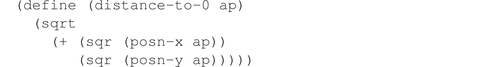
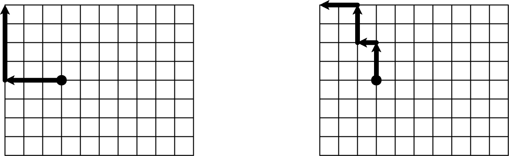

5.3 Programming with posn
Now consider designing a function that computes the distance of some location to the origin of the canvas:

The picture clarifies that “distance” means the length of the most direct path—“as the crow flies”—from the designated point to the top-left corner of the canvas.
Here are the purpose statement and the header:
; computes the distance of ap to the origin
(define (distance-to-0 ap)
0)
The key is that distance-to-0 consumes a single value, some posn. It produces a single value, the distance of the location to the origin.
In order to make up examples, we need to know how to compute this distance. For points with 0 as one of the coordinates, the result is the other coordinate:
(check-expect (distance-to-0 (make-posn 0 5)) 5)
(check-expect (distance-to-0 (make-posn 7 0)) 7)
For the general case, we could try to figure out the formula on our own, or we may recall the formula from our geometry courses. As you know, this is domain knowledge that you might have, but in case you don’t we supply it; after all, this domain knowledge isn’t computer science. So, here is the distance formula for (x,y) again:
Given this formula, we can easily make up some more functional examples:
(check-expect (distance-to-0 (make-posn 3 4)) 5)
(check-expect (distance-to-0 (make-posn 8 6)) 10)
(check-expect (distance-to-0 (make-posn 5 12)) 13)
Just in case you’re wondering, we rigged the examples so that the results would be easy to figure out. This isn’t the case for all posn structures.
Stop! Plug the x- and y-coordinates from the examples into the formula. Confirm the expected results for all five examples.
Next we can turn our attention to the definition of the function. The examples imply that the design of distance-to-0 does not need to distinguish between different situations; it always just computes the distance from the x- and y-coordinates inside the given posn structure. But the function must select these coordinates from the given posn structure. And for that, it uses the posn-x and posn-y primitives. Specifically, the function needs to compute (posn-x ap) and (posn-y ap) because ap is the name of the given, unknown posn structure:
(define (distance-to-0 ap)
(… (posn-x ap) …
… (posn-y ap) …))
Using this template and the examples, the rest is straightforward:

The function squares (posn-x ap) and (posn-y ap), which represent the x- and y-coordinates, sums up the results, and takes the square root. With DrRacket, we can also quickly check that our new function produces the proper results for our examples.
Exercise 63. Evaluate the following expressions:
• (distance-to-0 (make-posn 3 4))
• (distance-to-0 (make-posn 6 (* 2 4)))
• (+ (distance-to-0 (make-posn 12 5)) 10)
by hand. Show all steps. Assume that sqr performs its computation in a single step. Check the results with DrRacket’s stepper. 
Exercise 64. The Manhattan distance of a point to the origin considers a path that follows the rectangular grid of streets found in Manhattan. Here are two examples:

The left one shows a “direct” strategy, going as far left as needed, followed by as many upward steps as needed. In comparison, the right one shows a “random walk” strategy, going some blocks leftward, some upward, and so on until the destination—here, the origin—is reached.
Stop! Does it matter which strategy you follow?
Design the function manhattan-distance, which measures the Manhattan distance of the given posn to the origin.